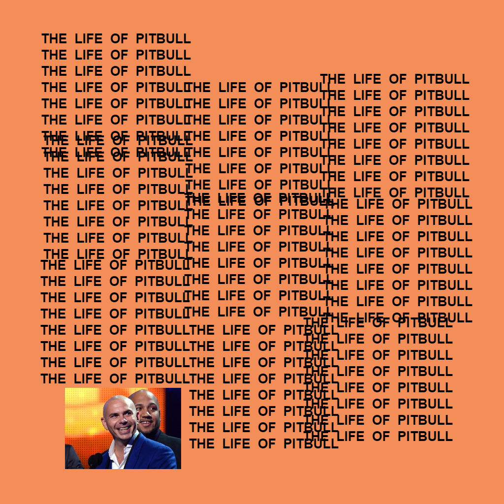
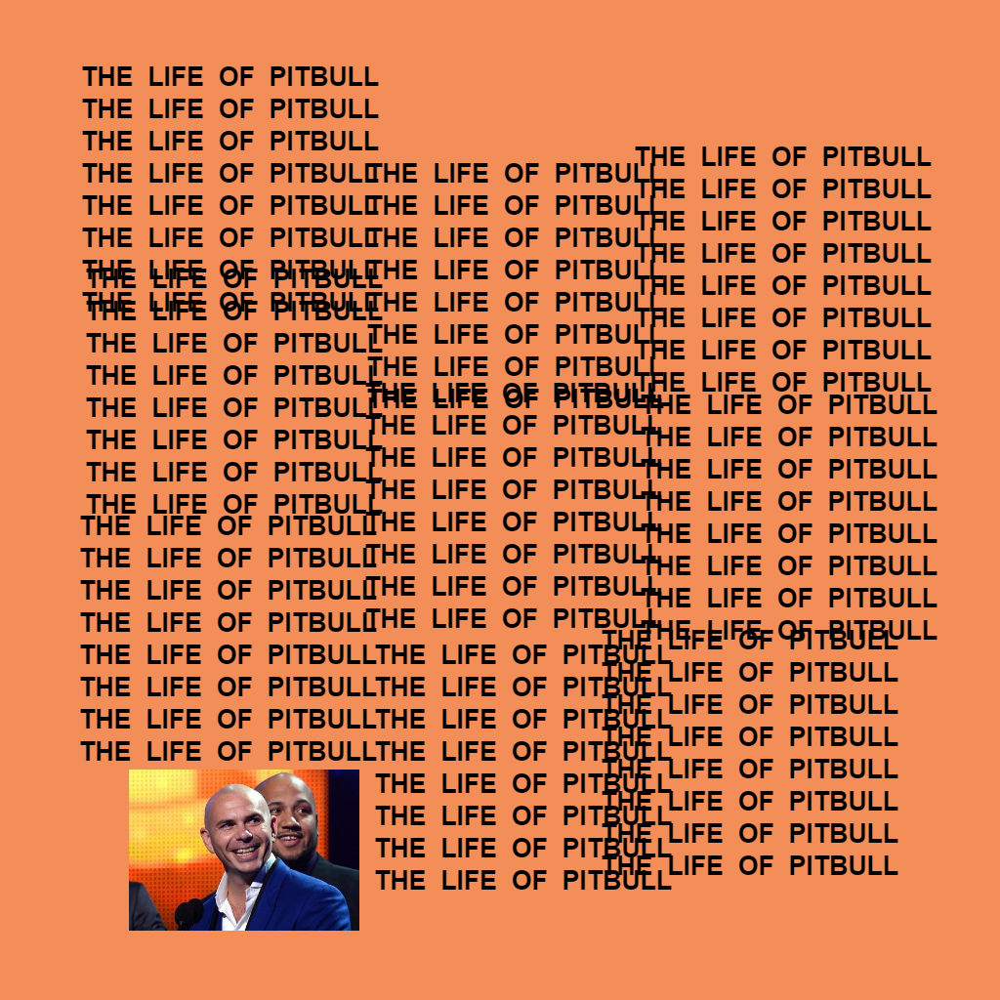

Here you'll find a list of projects that I've created on my own or contributed towards. They range from simple web applications to video games to database management software.
The Life of Pablo | Album Art Generator


I thought the album art of Kanye West's The Life of Pablo was hilarious, so naturally I had to make a tool that let me make my own stupid fake album covers.
This web app was written in pure JavaScript and utilizes HTML5's Canvas element to render the image.